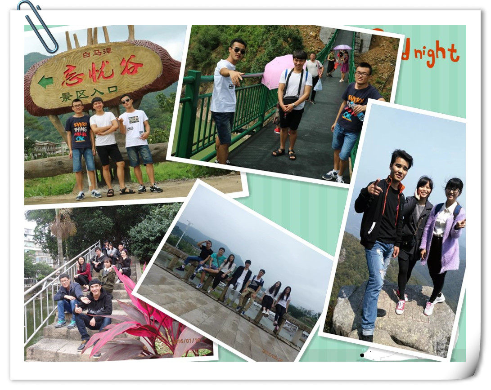
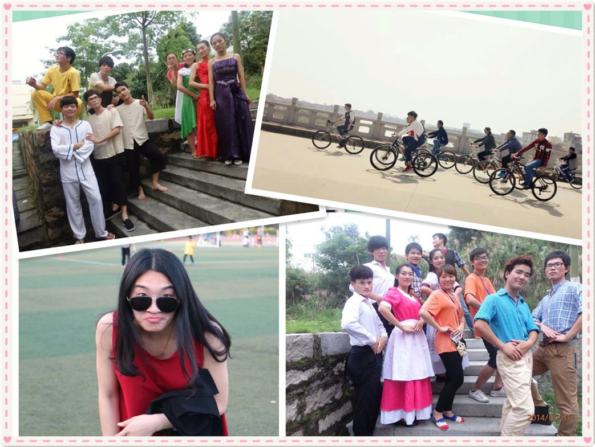

今天再回首，看到这些照片，留在心里的感觉是复杂的，我想哭一场，然后好好的启程。

（这是我们去忘忧谷、去九华山、在莆院、在涭溪公园的时候）这一霎那，内心之间是盼望着能够与友人故地重游。

（这是我们两年舞展、去骑行、回首莆院的时候）这一霎那，内心之间是满怀着回忆与珍惜。
（这是我。凤凰山、九华山、表演归来。）这一霎那，内心之间最响亮的声音是欣赏自己，爱惜每个时段的自己。
我把每一次的相遇都当作告别，把每次的告别又当作相遇，再见过去的自己。
无论过去是失败，是悔恨，或者是进步，是成长，都不重要，都不再重要，因为那些都已经根深蒂固的停留在心底。